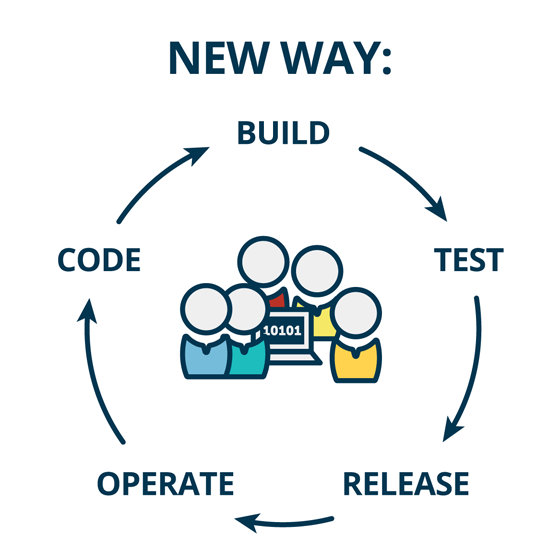
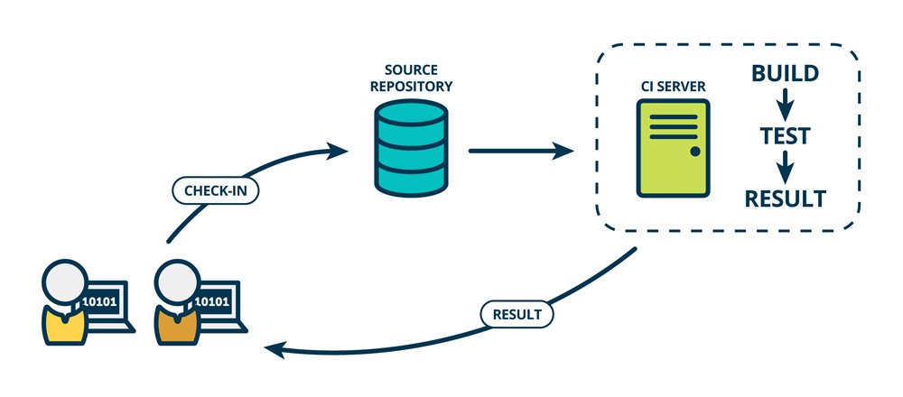
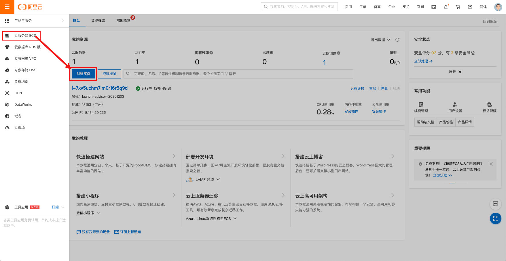

VUE3+TS项目打包和自动化部署
项目打包和自动化部署(深入 Vue3+TypeScript 技术栈-coderwhy 大神新课)
一. 项目部署和 DevOps
1.1. 传统的开发模式
在传统的开发模式中，开发的整个过程是按部就班就行：

但是这种模式存在很大的弊端：
- 工作的不协调：开发人员在开发阶段，测试和运维人员其实是处于等待的状态。等到测试阶段，开发人员等待测试反馈 bug，也会处于等待状态。
- 线上 bug 的隐患：项目准备交付时，突然出现了 bug，所有人员需要加班、等待问题的处理；
1.2. DevOps 开发模式
DevOps 是 Development 和 Operations 两个词的结合，将开发和运维结合起来的模式：


1.3. 持续集成和持续交付
伴随着 DevOps 一起出现的两个词就是持续集成和持续交付(部署)：
- CI 是 Continuous Integration（持续集成）；
- CD 是两种翻译：Continuous Delivery（持续交付）或 Continuous Deployment（持续部署）；
持续集成 CI：

持续交付和持续部署：

1.4. 自动化部署流程

二. 购买云服务器
2.1. 注册阿里云的账号
云服务器我们可以有很多的选择：阿里云、腾讯云、华为云。
- 目前在公司使用比较多的是阿里云；
- 我自己之前也一直使用阿里云，也在使用腾讯云；
- 之前华为云也有找我帮忙推广他们的活动；
但是在我们的课程中，我选择目前使用更加广泛的阿里云来讲解：
我们需要注册阿里云账号
-
注册即可，非常简单
2.2. 购买云服务器
购买云服务器其实是购买一个实例。
1.来到控制台：

2.创建实例，选择类型和配置


3.配置网络安全组

4.创建实例

三. 搭建服务器环境
3.1. jenkins 自动化部署
3.1.1. 安装 Java 环境
Jenkins 本身是依赖 Java 的，所以我们需要先安装 Java 环境：
- 这里我安装了 Java1.8 的环境
1 | dnf search java-1.8 |
3.1.2. 安装 Jenkins
因为 Jenkins 本身是没有在 dnf 的软件仓库包中的，所以我们需要连接 Jenkins 仓库：
- wget 是 Linux 中下载文件的一个工具，-O 表示输出到某个文件夹并且命名为什么文件；
- rpm：全称为The RPM Package Manage，是 Linux 下一个软件包管理器；
1 | wget –O /etc/yum.repos.d/jenkins.repo http://pkg.jenkins-ci.org/redhat-stable/jenkins.repo |
编辑一下文件/etc/yum.repos.d/jenkins.repo
- 可以通过 vim 编辑
1 | [jenkins] |
安装 Jenkins
1 | dnf install jenkins # --nogpgcheck(可以不加) |
启动 Jenkins 的服务：
1 | systemctl start jenkins |
Jenkins 默认使用 8080 端口提供服务，所以需要加入到安全组中：

3.1.3. Jenkins 用户
我们后面会访问 centos 中的某些文件夹，默认 Jenkins 使用的用户是 jenkins，可能会没有访问权限，所以我们需要修改一下它的用户：
修改文件的路径：/etc/sysconfig/jenkins

之后需要重启一下 Jenkins：
1 | systemctl restart jenkins |
3.1.4. Jenkins 配置
打开浏览器，输入：http://8.134.60.235:8080/
- 注意：你输入自己的 IP 地址
获取输入管理员密码：
- 在下面的地址中
cat /var/lib/jenkins/secrets/initialAdminPassword

可以安装推荐的插件：

3.1.5. Jenkins 任务
新建任务：


配置项目和保留策略：

源码管理：

构建触发器：
这里的触发器规则是这样的：
- 定时字符串从左往右分别是：分 时 日 月 周
1 | #每半小时构建一次OR每半小时检查一次远程代码分支，有更新则构建 |

构建环境：
注意：我们需要搭建 Node 的环境
- 第一步：配置 Node 的环境；
- 第二步：安装 Node 的插件；

第一步：配置 Node 的环境

第二步：安装 Node 的插件
- 这里因为我已经安装过了，所以没有搜索到；

构建执行的任务：
- 查看 Node 的版本等是否有问题；
- 执行
npm install安装项目的依赖； - 移除原来 mall_cms 文件的所有内容；
- 将打包的 dist 文件夹内容移动到 mall_cms 文件夹；
1 | pwd |

3.2. nginx 安装和配置
3.2.1. 安装 nginx
后续我们部署会使用 nginx，所以需要先安装一下 nginx：
1 | dnf install nginx |
启动 nginx：
1 | systemctl start nginx |
3.2.2. 配置 nginx
我们这里主要配置 nginx 的用户和默认访问目录：
配置用户：

通过 Linux 命令创建文件夹和文件：
1 | mkdir /root/mall_cms |
配置访问目录：